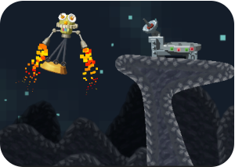
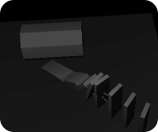
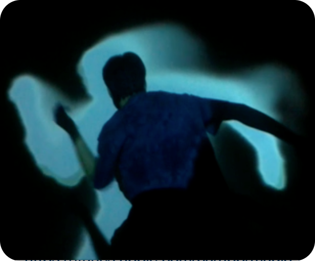

# Portfolio
_______
## Jelly Splash
Hit game for iOS and Android. Jelly Splash was #1 most downloaded and #35 top grossing in the US App Store. I was a developer on both the iOS and Android teams from the beginning of development through launch.
iTunes: https://itunes.apple.com/us/app/jelly-splash/id645949180?mt=8
Google Play: https://play.google.com/store/apps/details?id=com.wooga.jelly_splash&hl=en
_______
## Magic Gems
I was Lead Developer on Magic Gems during its entire production and launch over 9 months. The project went well from the technical side, but was not a success financially.
iTunes: https://itunes.apple.com/ca/app/magic-gems/id895425586?mt=8
_______
## <img src="./assets/watchagon_thumbnail.png" style="width: 100px;"/> Super Watchagon
Developed in Unity for Android Wear smartwatches during a 3 day game jam at Wooga GmbH. Inspired by Super Hexagon and Bit Trip Beat.
Web Build: http://fgeorg.com/SuperWatchagon/web_build.html
Demo Video: https://www.youtube.com/watch?v=5xTIehUAd1c
_______
##  Lunar Scrapyard
Developed in Unity for iOS and Android during a 3 day game jam at Wooga GmbH. In this Lunar Lander style game, you use a giant magnet attached to a spaceship to collect junk and move it onto teleporters
Web Build: http://fgeorg.com/LunarSalvage/LunarSalvage.html
_______
## Warp
A classmate and I made this game for the final project in cs248. We won 1st place and a paid trip to Siggraph 2010.
Demo Video: https://www.youtube.com/watch?v=-PFxqVegKrA
_______
##  3D Physics
A simple 3D rigid body physics library I wrote as my final project for cs448x.
Technical Details: https://fgeorg.com/psim_details.html
Demo Video: https://www.youtube.com/watch?v=13dJZ9FeKJM
_______
##  Dance Project
Combined senior project for dance and computer science, I used OpenCV, a Kinect camera, and a projector to project visuals onto moving dancers.
The performance was not recorded, but there's a short demo here: https://www.youtube.com/watch?v=J2VC12e1dXg